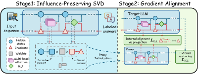
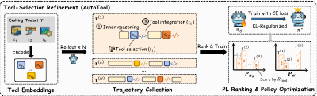
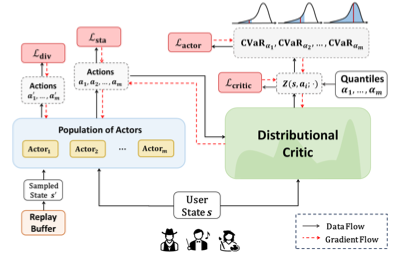
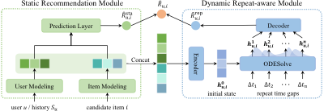
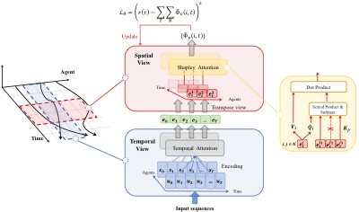
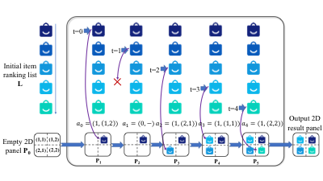
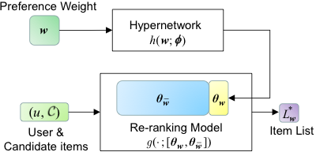
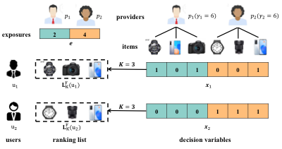

University of Illinois
Urbana-Champaign
Hi, I'm Sirui Chen! I am a PhD student at the University of Illinois at Urbana-Champaign, advised by Prof. Jingrui He. I completed my Master's degree in Computer Science from Renmin University of China, advised by Prof. Jun Xu. Prior to that, I obtained my Bachelor's degree from the Department of Foreign Languages and Literatures at Tsinghua University.
My long-term goal is to develop reliable and controllable AI systems fully aligned with human intentions. My research spans three interconnected themes:
- Data-Centric Machine Learning: data selection, synthetic data generation;
- Reinforcement Learning: agent collaboration, agent evolution with exploration, model interaction in complex environments;
Ultimately, I aspire to build systems that self-evolve, autonomously improving from data curation to model training to evaluation, closing the loop on the fly.
I'm always happy to discuss research or explore collaborations — feel free to reach out!
News
| Excited to join Amazon as a Research Scientist Intern this summer! | |
| One paper accepted to ICLR 2026! | |
| AutoTool won Best Paper Award at MMRAgI Workshop @ ICCV 2025! | |
| Officially started my Ph.D journey at UIUC! | |
| One paper selected as a Best Short Paper Nominee at SIGIR 2024. Thanks to SIGIR! | |
| One paper accepted by RecSys 2024! | |
| Three papers accepted by SIGIR 2024! | |
| One paper accepted by AAAI 2024! | |
| One paper accepted by KDD 2023! |
Selected Publications
* denotes equal contribution. Selected from first/co-first author and award-winning papers.


AutoTool: Dynamic Tool Selection and Integration for Agentic Reasoning






P-MMF: Provider Max-min Fairness Re-ranking in Recommender System
Services
Conference Reviewer
2026 ICML, ACL
2025 CVPR, ICLR, AAAI
2024 WWW, DAI, IEEE DSAA
Journal Reviewer
TNNLS, TKDD, TIST